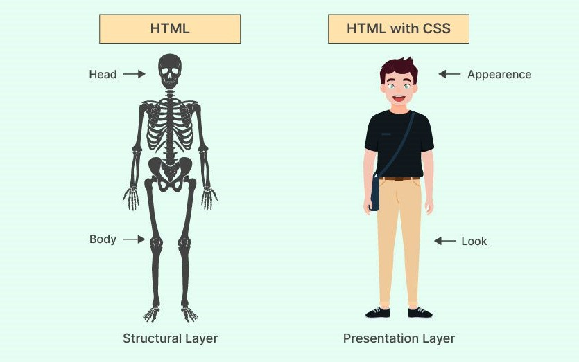

HTML (HyperText Markup Language) adalah fondasi dari setiap halaman web. Bahasa ini digunakan untuk menyusun struktur dasar dari konten yang akan ditampilkan di browser. HTML terdiri dari berbagai elemen seperti <head>, <body>, <div>, dan <p> yang masing-masing memiliki peran tertentu dalam membentuk tata letak dan konten halaman web.
Elemen-elemen HTML bekerja seperti "blok bangunan" yang menyusun kerangka halaman. Misalnya, tag <h1> digunakan untuk judul utama, sedangkan <img> untuk menampilkan gambar. Selain itu, HTML juga mendukung atribut untuk memberikan informasi tambahan seperti ID, kelas, dan tautan.
CSS (Cascading Style Sheets) berperan sebagai "pakaian" bagi struktur HTML. CSS memberikan gaya visual seperti warna latar, jenis font, margin, padding, dan layout grid atau flexbox. Tanpa CSS, halaman web hanya akan terlihat polos dan kurang menarik.
Salah satu keunggulan utama dari CSS adalah kemampuannya untuk memisahkan konten dan presentasi. Hal ini memudahkan pengembang dalam mengelola tampilan antarmuka secara terpusat tanpa harus menyentuh struktur HTML. Dalam proyek besar, hal ini sangat membantu meningkatkan efisiensi kerja dan konsistensi desain.
Dengan kombinasi HTML dan CSS yang baik, kita dapat membuat halaman web yang tidak hanya informatif tetapi juga estetik dan profesional. Pemahaman mendalam tentang kedua teknologi ini adalah fondasi utama dalam dunia frontend development.
Sebagai langkah awal, mulailah dengan memahami struktur dasar HTML, lalu pelajari bagaimana CSS digunakan untuk menyesuaikan tampilannya. Banyak sumber belajar tersedia secara gratis, dan latihan langsung adalah cara terbaik untuk menguasainya.